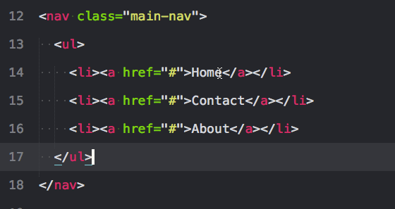

选择
- 选择一个选中项的下一个匹配项
- 选择一个选中项的所有匹配项
- 选择与光标关联的开始和结束标签
- 选择容器内内容（新）
- 选择括号内的内容
移动行和文本
- 上移或下移行
- 复制行或选中项
- 增加和减少缩进
剪切和删除，复制和粘贴
- 剪切行或选中项
- 粘贴并保持缩进
- 用标签包裹行或选中项
- 移除未闭合的容器 元素
文本和数字操作
- 计算数学表达式
- 递增和递减
- 大写和小写
注释和对齐变量
- 注释选中项/行
- AlignTab自定义快捷键
选择一个选中项的下一个匹配项:ctrl+d
把光标放在一个单词上，按下ctrl+d 将选择这个单词。一直按ctrl+d多次，将选择当前选中项的下一个匹配项。

选择一个选中项的所有匹配项:alt+f3
和上面一样,但它选择文件中的所有匹配项。小心使用这个,因为它能选择一个文件中的所有匹配项. . .

选择与光标关联的开始和结束标签:ctrl+shift+’
这是一个法宝。也许你希望所有属性保持不变,但只是想选择标签。这个快捷键为你这样做,会注意到你可以在一次操作多个标签。*需要Emmet插件
选择容器内内容: ctrl+shift+a
如果你把光标放在文本间再按下上面的键将选择文本。但是再次按下它，将选择父容器,再按,将选择父容器的父容器。*需要Emmet插件

选择括号内的内容:ctrl+shift+m
这有助于选择括号之间的一切。同样适用于CSS。

上移或下移行: ctrl+shift+↑ 和 ctrl+shift+↓

复制行或选中项: ctrl+shift+d
如果你已经选中了文本,它会复制你的选中项。否则,把光标放在行上,会复制整行。

快速粘贴并保持缩进: 还是ctrl+shift+d
这是又一个我每次都用的快捷操作了。选中了要复制的代码后，按下快捷键。要注意的是，光标的位置：停在上一行的末尾
快速对代码缩进 : ctrl+[ 和 ctrl+] 没错这个功能就是这么任性，不用管光标在什么位置，都可以整行进行缩进和反缩进

剪切行或选中项:ctrl+x
剪切一行到你的剪切板，你可以粘贴到其他地方. 当然，这个功能已经被我玩"坏"了，我把这个功能用来替代del键了
用标签包裹行或选中项:alt+shift+w
使用标签包裹一行; 开始输入你想使用的标签(已经自动选择了开始标签和结束标签).

移除与你的光标相关的父标签: ctrl+shift+;
这会移除与你的光标相关的父标签。对清除标记很有帮助
递增和递减（10）: alt+shift+↑和alt+shift+↓ 递增和递减（1）: alt+↑和alt+↓ 递增和递减（0.1）: ctrl+↑和ctrl+↓
你并不需要选择数字, 靠近数字就好了.
大写和小写: ctrl+k+u,ctrl+k+l
你并不需要选择代码, 靠近字母就好了.

注释选中项/行:ctrl+/
这个在所有语言下都可用, 对行和选中项都可用.

快速向上向下选择一些代码 , ctrl+alt+↑ ctrl+alt+↓
